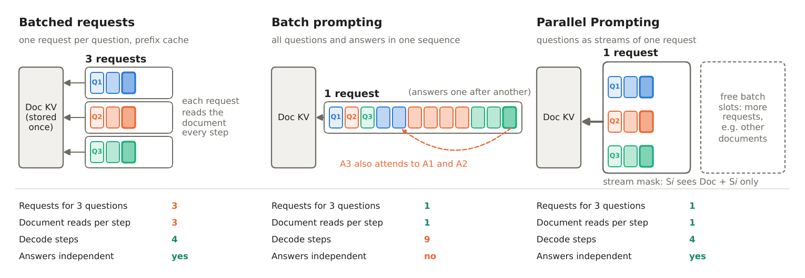
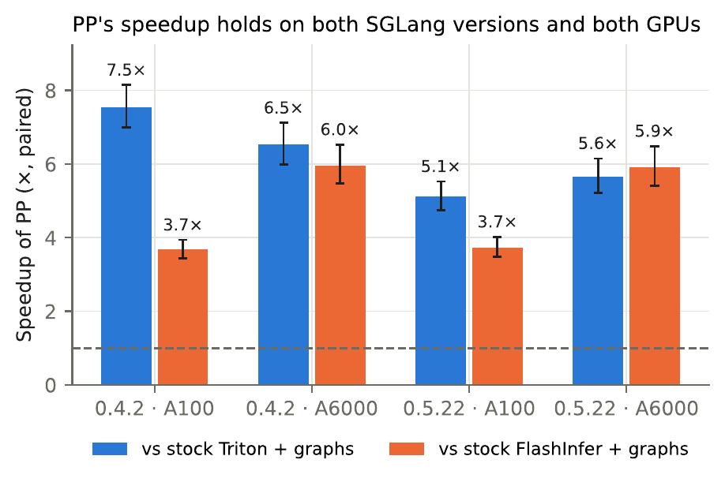
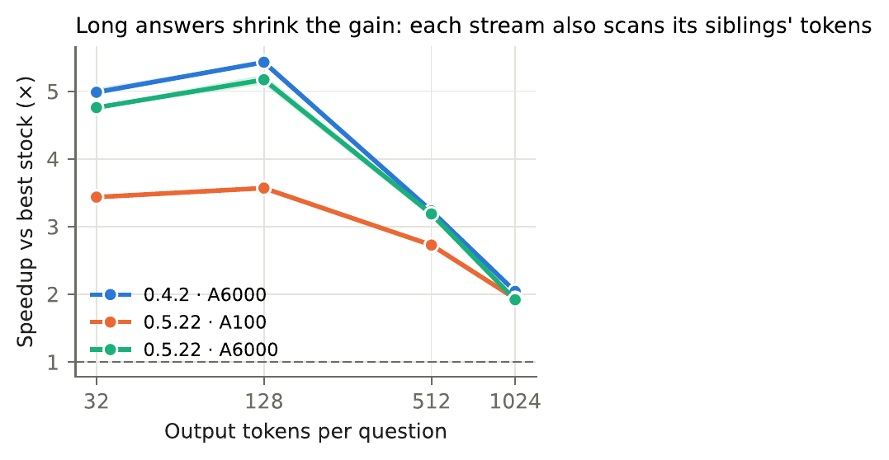
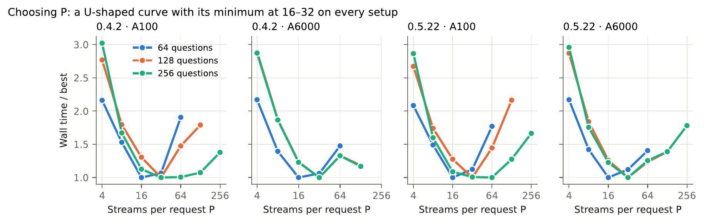

Read Once, Answer ManyParallel Prompting for Shared-Context LLM Inference

CodeLlama-7B, 8k–16k-token documents, 64–256 questions per document, 128 output tokens.
Abstract
LLM workloads sometimes ask many independent questions about the same long document, as in document QA, data labeling and LLM-based evaluation. Prefix caching removes the redundant prefill shared by these queries, but each decode step still reads the document's key–value (KV) cache once per question, so decoding is bound by memory bandwidth and scales with the number of questions.
We present Parallel Prompting, which decodes P questions as P independent streams of a single request. Every step reads the shared document once for all P streams, and a stream-id attention mask, evaluated inside the attention kernel, keeps each answer conditioned only on the document and its own question. We implement it in SGLang by adding about 80 lines to three existing files and a small engine package; the mask needs no dense tensor, and every decode step has a fixed shape that is captured as a CUDA graph.
With CodeLlama-7B, 8k–16k-token documents and 64–256 questions per document, Parallel Prompting is 3.7× faster than stock SGLang with its FlashInfer backend on an A100 and 5.9–6.0× faster on an RTX A6000, on two SGLang releases. Timed on identical inputs, it is faster than stock SGLang in all 144 runs.
How it works
Stock serving engines already store a shared document's KV cache once. But each question is still its own request, so every decode step of every question reads the whole document again: Q questions mean Q reads of the document per step. Parallel Prompting puts P questions into one request and makes two small changes so that each answer is the same as decoding its question alone:
- A stream mask. Every KV slot carries a stream id (−1 for the document). A token of stream s may attend only to the document and to earlier tokens of stream s. The rule is ANDed into the existing causal mask inside SGLang's Triton attention kernel, so no dense mask is ever built.
- Shared positions. Every stream's positions start right after the document, as if its question were the only one.
Each decode step appends one token per stream and has a fixed shape, so it is captured once as a CUDA graph. The document's KV is read once per request per step, which turns P matrix–vector attention products into one matrix–matrix product.

Results
Faster than stock SGLang on every setting

Wall time to answer all Q questions about one cached document (SGLang v0.4.2, A100-80GB, CUDA graphs on for every configuration):
| Document | Q | FlashInfer | Triton | Parallel Prompting | Speedup |
|---|---|---|---|---|---|
| 8k tokens | 64 | 9.76 s | 18.19 s | 3.54 s | 2.72× |
| 8k tokens | 128 | 16.19 s | 34.44 s | 4.66 s | 3.47× |
| 8k tokens | 256 | 32.26 s | 68.07 s | 8.30 s | 3.89× |
| 16k tokens | 64 | 16.17 s | 32.61 s | 5.29 s | 3.06× |
| 16k tokens | 128 | 30.61 s | 63.55 s | 6.80 s | 4.50× |
| 16k tokens | 256 | 59.99 s | 126.15 s | 12.31 s | 4.87× |
Speedup is over the faster stock configuration (mean of 6 seeds).
When it helps most


Real benchmarks
The whole benchmark, timed from an empty cache including document prefill (Qwen2.5-7B-Instruct, SGLang v0.5.22, A100-80GB, radix prefix cache on for every configuration):
| Configuration | QuALITY time | Accuracy | LooGLE time | Recall |
|---|---|---|---|---|
| Stock SGLang, FlashInfer | 133.2 s | 76.13 | 403.6 s | 83.41 |
| Stock SGLang, Triton | 155.9 s | 76.22 | 568.0 s | 83.77 |
| Parallel Prompting | 73.6 s | 75.89 | 508.3 s | 83.61 |
On QuALITY, whose answers are short, Parallel Prompting answers all 2,086 questions 1.81× faster than the fastest stock setup. On LooGLE, whose answers average 234 tokens on 20k-token documents, it beats stock Triton (the same attention kernels) by 1.12× but is slower than stock FlashInfer, which Parallel Prompting does not use yet.
Same answers
Accuracy and token recall agree within 0.33 points on QuALITY and 0.36 on LooGLE. On SQuAD v1.1 (10,570 questions, CodeLlama-7B, RTX A6000), Parallel Prompting matches both stock backends — every paired 95% confidence interval on the F1 difference contains zero — while generating the answers 1.71× faster.
| Configuration | EM | F1 | ΔF1 [95% CI] | Answer time |
|---|---|---|---|---|
| Parallel Prompting (P = 32) | 21.51 | 45.14 | – | 237.6 s |
| Stock SGLang, FlashInfer | 21.50 | 45.25 | −0.11 [−0.25, 0.03] | 406.5 s |
| Stock SGLang, Triton | 21.55 | 45.18 | −0.04 [−0.20, 0.12] | 409.2 s |
Use the code
Parallel Prompting is an overlay on stock SGLang for v0.5.22 and v0.4.2.post3. Only six files differ from SGLang: three new, three edited. Start from the official SGLang Docker image and copy the overlay on:
git clone https://github.com/jlab-nlp/parallel-prompting.git && cd parallel-prompting
docker run --gpus all -it --shm-size 8g -v $PWD:/work -w /work lmsysorg/sglang:v0.5.22 bash
bash install.sh 0.5.22 # refuses to overwrite files that are not stock SGLangCheck it and see the speedup on your GPU:
cd sglang-0.5.22
python3 pp_bench/test_mask.py # CPU: layout vs. reference mask
python3 pp_bench/check_kernel.py # GPU: kernel vs. PyTorch attention
python3 pp_bench/demo_gen.py --doc-tokens 12000 --num-questions 256 \
--answer-tokens 32 --parallel-size 32 --cuda-graph --compareOr call the engine from Python:
from sglang.srt.server_args import ServerArgs
from sglang.srt.parallel_prompt.engine import ParallelPromptEngine
args = ServerArgs(model_path="codellama/CodeLlama-7b-Instruct-hf",
attention_backend="triton", sampling_backend="pytorch",
disable_cuda_graph=True, disable_radix_cache=True)
engine = ParallelPromptEngine(args, cuda_graph=True)
tok = engine.tokenizer
doc = tok.encode("Read the passage and answer briefly.\n\nPassage:\n...\n\n")
qs = [tok.encode(q, add_special_tokens=False)
for q in ["Question: Who ...?\nAnswer:", "Question: When ...?\nAnswer:"]]
out = engine.generate([doc], [qs], max_new_tokens=64,
stop_token_ids=engine.default_stop_ids(), parallel_size=2)
print([tok.decode(a) for a in out[0]]) # out[document][question] -> token idsGood fit
- Many questions, labels or evaluation prompts over the same long document, run as an offline batch.
- Short to medium answers. The gain shrinks as answers get longer.
- A single GPU with the Triton attention backend and greedy decoding, which is what the engine supports today.
BibTeX
@misc{zhao2026readonce,
title = {Read Once, Answer Many: Parallel Prompting for Shared-Context {LLM} Inference},
author = {Zekun Zhao and Jeffrey Flanigan},
year = {2026},
}